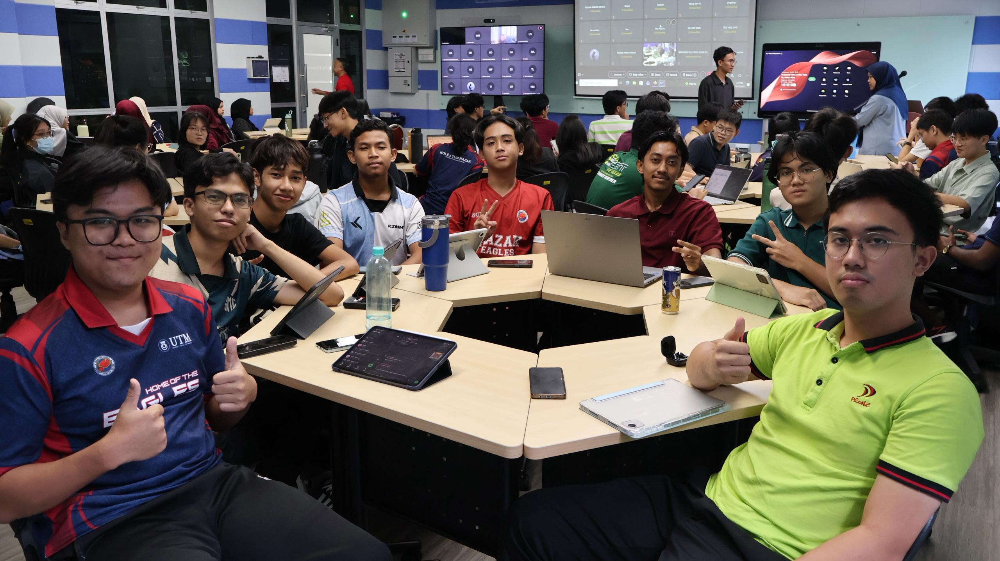
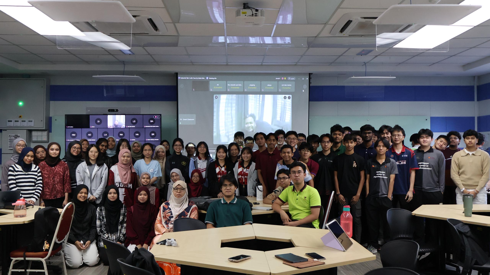
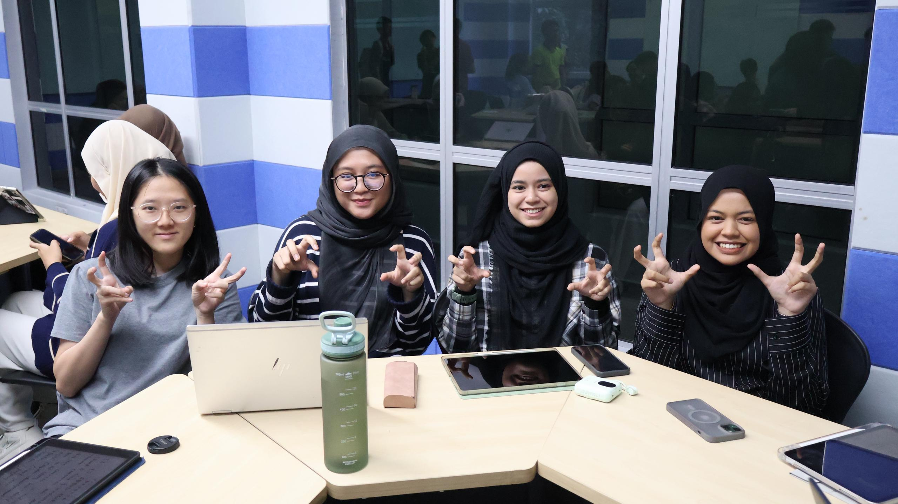
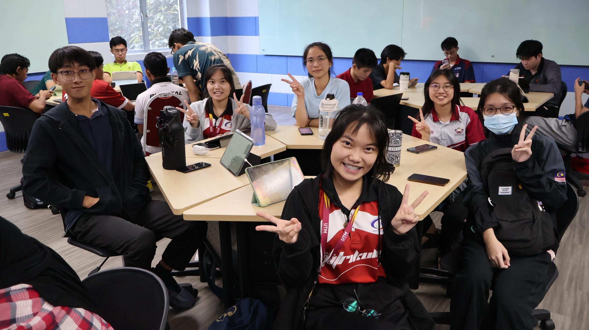
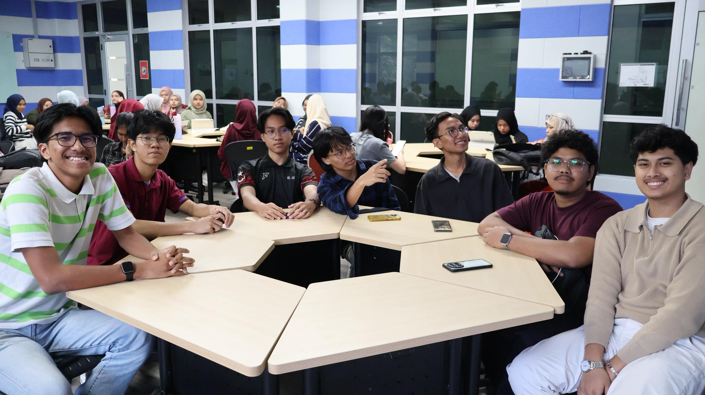
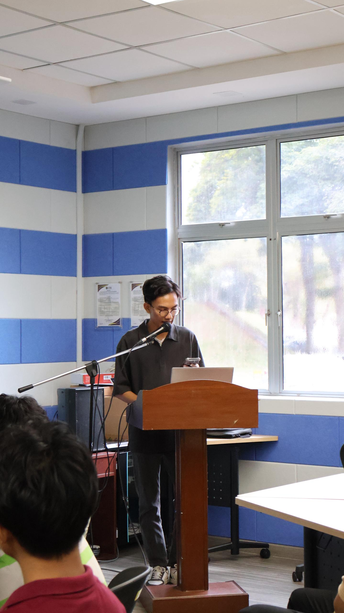

I attended a professional industry talk by Serunai Commerce Sdn Bhd held at the HyFlex Classroom, N28a. The talk is about Project Management & System Development, and the speech is delivered by Ts. Hj Abdul Halim Abdul Muttalib, Head of Technology and Innovation
Throughout the talk, he used interactive methods to delivery his speech about the importance of Software Development Life Cycle (SDLC), Agile and Waterfall methodology, delivering humourous moments in the classroom. He emphasized the 5 steps of SDLC, namely Planning, Analysis, Design, Implementation and Maintenance.






This talk sparked my interest to start doing my own mini project, as these invaluable skill of SDLC and Agile Methodology is highly demanded by industry, increasing employability. Throughout this talk, agentic coding plays a vital role in productivity, as it helps programmers to solve problems and eliminate bugs in real time
ISI Nanti
I believe this interesting method of delivering talks to student is the main selling point of learning from industry. Not only that, by doing academic writing, it sharpens my vocabulary and grammar for my upcoming Final Year Project